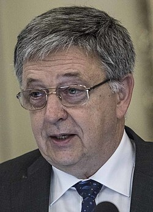

László Lovász | |
|---|---|
 Lovász in 2017 | |
| Born | March 9, 1948 |
| Citizenship | Hungarian, American[1] |
| Education | Eötvös Loránd University (CSc, PhD) Hungarian Academy of Sciences (PhD) |
| Known for | Erdős–Faber–Lovász conjecture Kneser's conjecture Lenstra–Lenstra–Lovász lattice basis reduction algorithm Lovász local lemma |
| Awards | Abel Prize (2021) Kyoto Prize in Basic Sciences (2010) Széchenyi Prize (2008) János Bolyai Creative Prize (2007) John von Neumann Theory Prize (2006) Gödel Prize (2001) Knuth Prize (1999) Wolf Prize (1999) Fulkerson Prize (1982, 2012) Pólya Prize (SIAM) (1979) |
| Scientific career | |
| Fields | Mathematics, Computer Science |
| Institutions | Eötvös Loránd University Microsoft Research Center Yale University University of Szeged |
| Thesis | Factors of Graphs (1971) |
| Tibor Gallai | |
Doctoral students | András Frank Tamás Szőnyi Van Vu |
László Lovász (Hungarian: [ˈlovaːs ˈlaːsloː]; born March 9, 1948) is a Hungarian mathematician and professor emeritus at Eötvös Loránd University, best known for his work in combinatorics, for which he was awarded the 2021 Abel Prize jointly with Avi Wigderson. He was the president of the International Mathematical Union from 2007 to 2010 and the president of the Hungarian Academy of Sciences from 2014 to 2020.
In graph theory, Lovász's notable contributions include the proofs of Kneser's conjecture and the Lovász local lemma, as well as the formulation of the Erdős–Faber–Lovász conjecture. He is also one of the eponymous authors of the LLL lattice reduction algorithm.
Lovász was born on March 9, 1948, in Budapest, Hungary.[2][3][1]
Lovász attended the Fazekas Mihály Gimnázium in Budapest.[4] He won three gold medals (1964–1966) and one silver medal (1963) at the International Mathematical Olympiad.[2][3][5][4] He also participated in a Hungarian game show about math prodigies.[3] Paul Erdős helped introduce Lovász to graph theory at a young age.[3][6]
Lovász received his Candidate of Sciences (C.Sc.) degree in 1970 at the Hungarian Academy of Sciences.[3][7][1] His advisor was Tibor Gallai.[7][8] He received his first doctorate (Dr.Rer.Nat.) degree from Eötvös Loránd University in 1971 and his second doctorate (Dr.Math.Sci.) from the Hungarian Academy of Sciences in 1977.[1]
From 1971 to 1975, Lovász worked at Eötvös Loránd University as a research associate.[1] From 1975 to 1978, he was a docent at the University of Szeged, and then served as a professor and the Chair of Geometry there until 1982.[1] He then returned to Eötvös Loránd University as a professor and the Chair of Computer Science until 1993.[1]
Lovász was a professor at Yale University from 1993 to 1999, when he moved to the Microsoft Research Center where he worked as a senior researcher until 2006.[1] He returned to Eötvös Loránd University where he was the director of the Mathematical Institute (2006–2011)[9] and a professor in the Department of Computer Science (2006–2018).[1] He retired in 2018.[1]
Lovász was the president of the International Mathematical Union between January 1, 2007, and December 31, 2010.[10][6] In 2014, he was elected the president of the Hungarian Academy of Sciences (MTA) and served until 2020.[11][12][6]
In collaboration with Erdős in the 1970s, Lovász developed complementary methods to Erdős's existing probabilistic graph theory techniques.[3] This included the Lovász local lemma, which has become a standard technique for proving the existence of rare graphs.[3] Also in graph theory, Lovász proved Kneser's conjecture and helped formulate the Erdős–Faber–Lovász conjecture.[3]
With Arjen Lenstra and Hendrik Lenstra in 1982, Lovász developed the LLL algorithm for approximating points in lattices and reducing their bases.[3][13] The LLL algorithm has been described by Gil Kalai as "one of the fundamental algorithms" and has been used in several practical applications, including polynomial factorization algorithms and cryptography.[3]
Donald Knuth named Lovász as one of his combinatorial heroes in a 2023 interview.[14]
Lovász was awarded the Pólya Prize in 1979, the Fulkerson Prize in 1982 and 2012, the Brouwer Medal in 1993, the Wolf Prize and Knuth Prize in 1999, the Gödel Prize in 2001, the John von Neumann Theory Prize in 2006, the János Bolyai Creative Prize in 2007, the Széchenyi Prize in 2008, and the Kyoto Prize in Basic Sciences in 2010.[1][15][16] In March 2021, he shared the Abel Prize with Avi Wigderson from the Institute for Advanced Study "for their foundational contributions to theoretical computer science and discrete mathematics, and their leading role in shaping them into central fields of modern mathematics".[2][3][6] In 2017 he received John von Neumann Professor title from the Budapest University of Technology and Economics (BME) and the John von Neumann Computer Society.[17] In 2021, he received Hungary's highest order, the Hungarian Order of Saint Stephen.[18]
He was elected a foreign member of the Royal Netherlands Academy of Arts and Sciences in 2006[19] and the Royal Swedish Academy of Sciences in 2007, and an honorary member of the London Mathematical Society in 2009.[20] Lovász was elected as a member of the U.S. National Academy of Sciences in 2012.[21] In 2012 he became a fellow of the American Mathematical Society.[22]
Lovász is married to fellow mathematician Katalin Vesztergombi,[23] with whom he participated in a program for high school students gifted in mathematics,[24] and has four children.[25][1] He is a dual citizen of Hungary and the United States.[1]
_(cropped).jpg){kind=link}